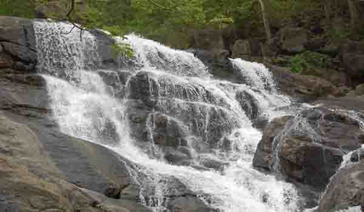
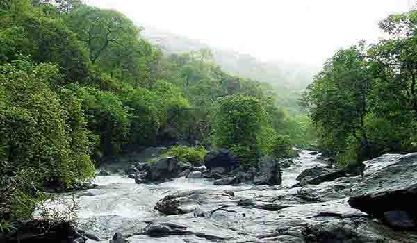

तुंगारेश्वर नॅशनल पार्कच्या आतील चिंचोटी धबधबबा मंत्रमुग्ध करील असा आहे. याला तुंगारेश्वर धबधबा म्हणूनही ओळखले जाते, हे नैसर्गिक आश्चर्य दाट झाडांनी वेढलेले आहे.
गुरगुरणे, गोंधळ घालणे आणि किलबिलाट करणे या आवाजाने निर्माण केलेले निसर्गाचे संगीत नक्कीच आपल्या इंद्रियांना मंत्रमुग्ध करेल. जर तुम्ही डोंगरांच्या आसपासच्या भागात असाल तर या परिसरातील आणखी एक प्रमुख आकर्षण असलेल्या तुंगारेश्वर मंदिरामध्ये अवश्य जा.
कामां गावाजवळील जंगलांतून एक स्वच्छ पायवाट आहे जो आपल्याला या कमी ज्ञात धबधब्याकडे नेतो, महाराष्ट्रातील साहसी प्रेमींसाठी एक अद्भुत ठिकाण.
स्थान : चिंचोटी - मुंबई जवळ, महाराष्ट्र